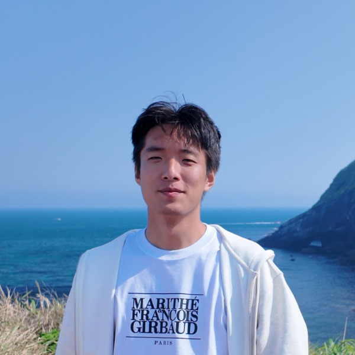
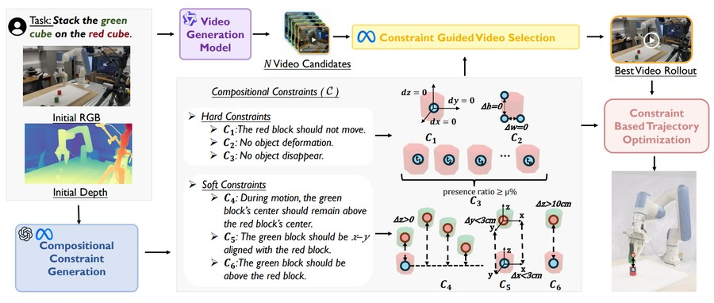
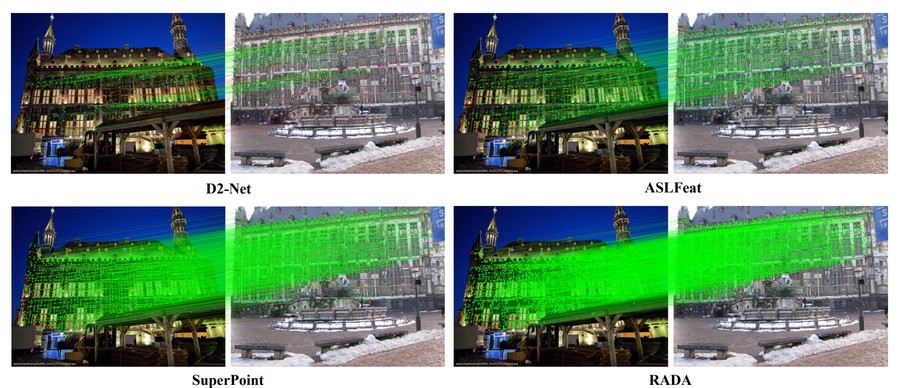

Grounded Action Model: 3D Grounding as a Foundation for Robotics
arXiv preprint, 2026
I am an M.S. student in Electrical and Computer Engineering at Northwestern University, working on embodied AI and 3D vision. I am advised by Qi Zhu. I am currently a visiting researcher at the University of Washington, working with Jiafei Duan and Ranjay Krishna.
I received my B.S. in Robot Engineering from Southeast University.

𝕏 Follow @gehao_zhang_Grounded Action Model: 3D Grounding as a Foundation for Robotics [Sep 2026]
My research focuses on embodied AI and 3D vision, with the aim of finding general representations for robots. Towards this goal, I am currently interested in:
Grounded Action Model: 3D Grounding as a Foundation for Robotics
arXiv preprint, 2026

EmboAlign: Aligning Video Generation with Compositional Constraints for Zero-Shot Manipulation
IEEE/RSJ International Conference on Intelligent Robots and Systems (IROS), 2026
Poster at the MMRAgI Workshop at CVPR 2026

RADA: Robust and Accurate Feature Learning with Domain Adaptation
International Conference on Neural Information Processing (ICONIP), 2024
Oral Presentation
 Northwestern University
Northwestern University University of California, Los Angeles
University of California, Los Angeles